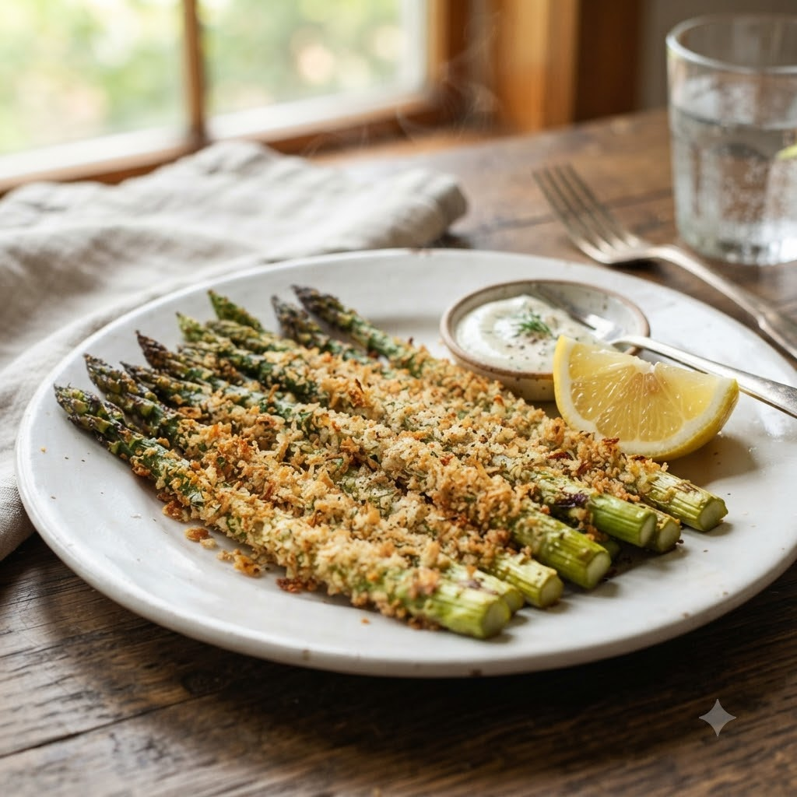

Crispy Panko Asparagus

Crispy Panko Asparagus
Airfryer – Bake 190°C 9 min — Serves 3
Ingredients
- 1 bunch asparagus, trimmed
- 1 egg, beaten
- 1/2 cup panko breadcrumbs
- 2 tbsp grated Parmesan
- Salt & pepper to taste
- Oil spray
Method
1Preheat: Preheat the Airfryer to 190°C for 4 minutes before adding the food to the basket.
2Dip asparagus spears in beaten egg, then coat in panko mixed with Parmesan, salt and pepper.
3Spray with oil and arrange in a single layer in the basket.
4Bake at 190°C for 9 minutes until golden and crisp, turning once.